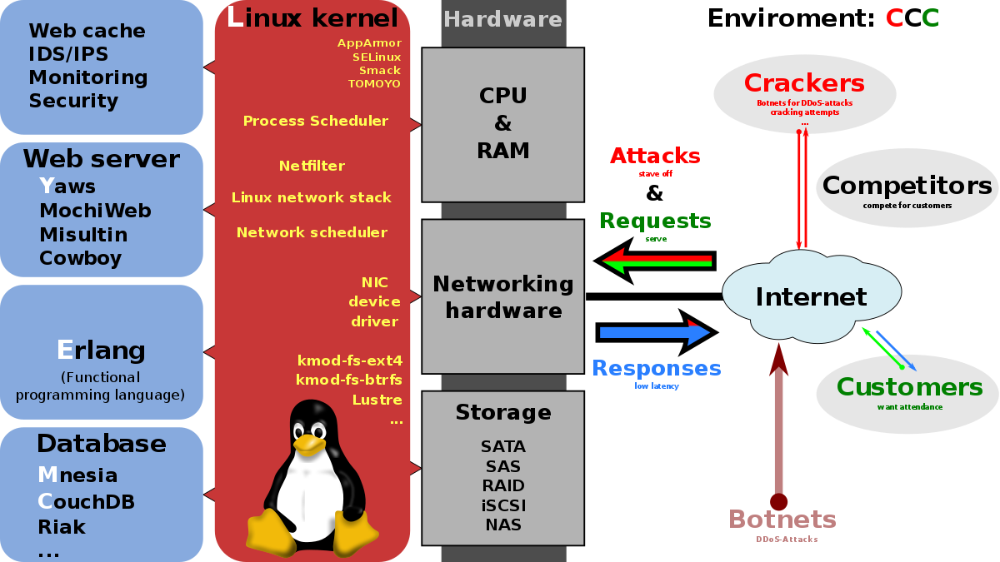
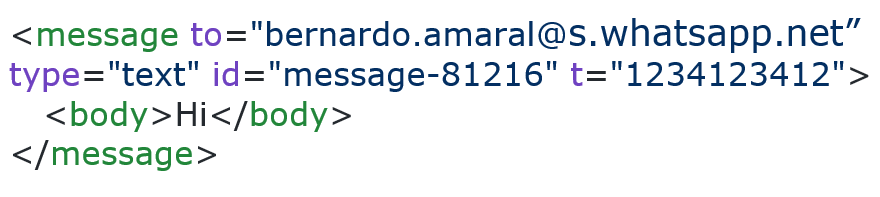
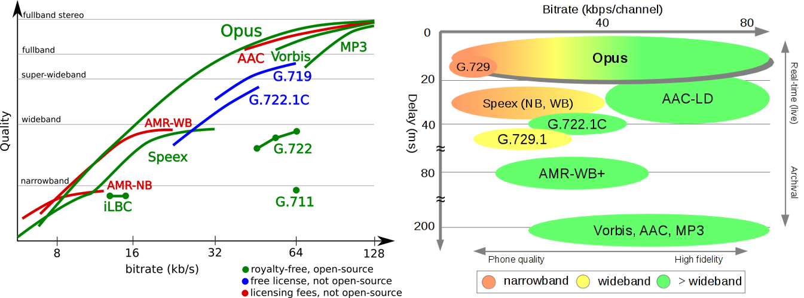
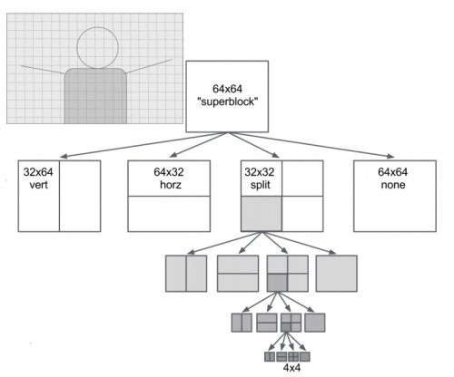

Dado o grande número de utilizadores e de funcionalidades que a aplicação WhatsApp foi criada para suportar, esta é detentora de uma arquitetura interna bastante complexa e de um desenvolvimento tecnológico em constante desenvolvimento e cujo nível de complexidade em crescente evolução.
A arquitetura do WhatsApp é do tipo LYME/LYCE, à exceção da camada Linux. Esta arquitetura corresponde a um conjunto de pilhas de software grátis e open source utilizadas para permitir alta atividade e rendimento dos servidores. Como substituto à camada de Linux, foi decidido colocar uma camada de FreeBSD, e a razão para esta troca foi a elevada complexidade do sistema operativo Linux.
FreeBSD é um sistema operativo do tipo Unix, totalmente open source. É também a distribuição BSD open source mais usada nos sistemas operativos à data de escrita deste artigo.
Figura 5.1: Exemplo de uma arquitetura do tipo LYME/LYCE. No WhatsApp, a camada Linux foi substituída por FreeBSD
Erlang é a linguagem primária através da qual o WhatsApp foi desenvolvido, conhecida pela sua performance, velocidade e escalabilidade.
WhatsApp iniciou os seus servidores em Ejabberd, um servidor open-source XMPP (eXtensible Messaging and Presence Protocol) de mensagens instantâneas, escrito em Erlang. Inicialmente, o protocolo de transmissão da aplicação era o XMPP. No entanto, ao longo do desenvolvimento da aplicação, grande parte do servidor foi customizado através de alterações do código base e de alguns componentes, com o objetivo de otimizar ao máximo a performance do servidor, tendo sido o protocolo de transmissão também alterado para um protocolo desenvolvido internamente. Este protocolo será estudado na subsecção seguinte deste artigo. Por sua vez, os ficheiros multimédia da aplicação são armazenados num servidor diferente, sendo este YAWS (Yet Another Web Server), um servidor web para conteúdo dinâmico, também escrito em Erlang, conhecido pela sua boa performance em ambientes com vários processos em simultâneo.
A base de dados é gerida através de Mnesia, também feita em Erlang, que é um sistema de gestão de bases de dados distribuído direcionado a telecomunicações. Estes sistemas permitem aos programadores gerir os dados, os mecanismos e a estrutura lógica da base de dados.
.png)
Figura 5.2: Arquitetura global do WhatsApp
O WhatsApp utiliza um protocolo semelhante ao XMPP para a transmissão de mensagens instantâneas, mas com algumas alterações desenvolvidas internamente e com o objetivo de aumentar a performance do protocolo. Este protocolo utiliza XML (eXtensible Markup Language) para permitir troca de dados estruturados e extensíveis em quase tempo real entre duas ou mais entidades na rede com encriptação de canal através de TLS (Transport Layer Security), e que envia as mensagens por TCP (Transmission Control Protocol).
O XMPP utilizado no WhatsApp foi customizado internamente, e foi denominado de FunXMPP. Este é dedicado à diminuição de sobrecarga entre comunicações.
Normalmente em XMPP são utilizadas palavras chave para os blocos de envio de mensagem, tal como presente na figura que se segue.
A principal diferença entre os protocolos considerados, é que no FunXMPP as palavras chave (“message”, “body”) são trocadas por bytes, reduzindo consideravelmente o conteúdo a transmitir.
Figura 5.3: Representação de um bloco de código portador de uma mensagem XMPP
No caso do WhatsApp, dada a necessidade transmissão de mensagens mesmo que o destinatário esteja offline, as mensagens enviadas têm de ser inicialmente armazenadas em fila num servidor, enquanto não são transmitidas. Para lidar com este problema, o servidor do WhatsApp deteta quando o destinatário está online e envia-lhe todas as mensagens em espera, apagando-as da memória do servidor permanentemente assim que entregues. Da mesma maneira, notificações de que uma mensagem foi recebida, entregue ou lida são também armazenadas temporariamente no servidor como se de uma mensagem normal se tratassem.
Depois de entregues, as mensagens ficam apenas armazenadas localmente numa base de dados SQLite, no smartphone dos utilizadores.
Por sua vez, as mensagens de multimédia são enviadas através do upload do ficheiro a ser enviado, para um servidor HTTP (HyperText Transfer Protocol), YAWS, e depois por envio de um link para o ficheiro para o destinatário.
Antes de serem enviadas pelo remetente, as imagens são comprimidas em JPEG, um mecanismo de compressão com perdas utilizado com o objetivo de reduzir o tamanho das imagens para propósitos de armazenamento e transmissão. Este é considerado um bom mecanismo para este tipo de utilização visto que a maioria das imagens enviadas são fotografias, relativamente às quais o olho humano não repara na informação em falta.
Ao serem comprimidas, as imagens sofrem ainda uma diminuição da resolução para 800px de largura, sendo a altura determinada pelo aspect ratio da imagem, através de uma quantização de 50%[X]. Isto permite que os tamanhos das imagens transmitidas sejam muito pequenos. O mecanismo de compressão JPEG funciona da seguinte forma[X] tal como apresentado na figura XX:
Figura 5.4: Mecanismo de descompressão e compressão de imagens para JPEG
O codec de áudio utilizado pela WhatsApp é o Opus. Este constitui um codec de audio e discurso royalty free, com perdas, projetado para ser compatível com grande parte das tecnologias de áudio interativo, sendo estas VoIP videoconferência e até chats de jogos de tempo real.
De modo a atingir bons fatores de compressão para ambos discurso e áudio, Opus utiliza LP (Previsão Linear) e a MDCT (Modified Discrete Cosine Transform). Este codec suporta um bitrate de codificação constante ou variável, desde 6kbit/s a 510kbit/s, tamanhos das frames entre 2.5 ms a 60 ms e vários sampling rates, desde 8kHz a 48kHz.
Opus surgiu de uma ramificação do codec SILK, desenvolvido pelo Skype.
Hoje em dia, tendo em conta que as suas características de codificação e transmissão são superiores às de todos os outros codecs utilizados na internet, é esperado que Opus se torne no codec áudio de facto da internet, assim que as plataformas comecem a adotá-lo. Por exemplo, a janeiro deste ano, a plataforma de áudio Soundcloud conhecida mundialmente, transitou do codec MP3 para Opus.
Figura 5.5: Comparações entre Opus e restantes codecs de áudio usados atualmente
Numa análise mais profunda e detalhada deste codec por Eduardo et al em 2012, é possível observar os diferentes modos de funcionamento, parâmetros de controlo e arquitetura do Opus.
O WhatsApp utiliza a metodologia VoIP para permitir aos seus utilizadores fazer chamadas de voz e de vídeo de um para um. Para tal, é utilizada a biblioteca PJSIP, uma biblioteca grátis e open source de comunicação multimédia, que suporta protocolos de comunicação como SIP, SDP, RTP, STUN, TURN e ICE.
No caso do WhatsApp, é utilizado WebRTC (Web Real Time Communication) que consiste num software open source lançado pela Google em 2011, que permite que browsers web e aplicações móveis implementem comunicações de áudio e vídeo, em tempo real, com uma interfaces simples, e através de comunicação peer-to-peer.
Apesar disto, a variante deste sistema utilizada pelo WhatsApp contém ainda várias otimizações e mecanismos proprietários desenvolvidos internamente, como por exemplo a utilização de um mecanismo de retransmissão no período inicial de uma chamada e apenas seguidamente a utilização de uma sessão peer-to-peer, que otimiza as situações em que as chamadas são rápidas.
Não há documentação relativa ao codec de compressão de vídeo utilizado pelo WhatsApp, mas dado as opções permitidas pelo WebRTC, e também a tendência de aplicações concorrentes, tais como o Facebook Messenger, que usa o VP8, será utilizado um dos codecs H.264, VP8 ou VP9. Visto que o codec H.264 não é royalty free e que VP9 é o sucessor ao VP8, analisar-se-á neste artigo o codec VP9.
VP9 foi lançado pela Google em 2012, com o objetivo de melhorar o bitrate em 50% em relação ao codec H.264, e que compete atualmente com o HEVC (High efficiency video coding). É open source e royalty free, e permite codificar vídeos eficientemente com resoluções muito altas.
Este codec divide a imagem em blocos de diferentes tamanhos, permitindo codificação independente ao longo de margens verticais. Para codificação e previsão de frames intra, utiliza a partição por blocos de transformação, com 10 diferentes modos de previsão. Utiliza também um mecanismo de otimização em que se codificam os melhores blocos com frames inter primeiro, e de seguida as frames intra nos superblocos que tenham mais margens. Na previsão de frames inter, é usado um vetor com compensação de movimento.
Figura 5.6: Divisão dos superblocos na codificação em VP9
Para além de utilizar a DCT, com dimensões superiores ao habitual, utiliza também a ADST (Asymmetric Discrete Sine Transform). Na codificação entrópica, é utilizado um codificador booleano com métodos aritméticos de 8 bits.
Finalmente, no final da descompressão é aplicado um filtro em loop que minimiza o efeito de bloco, e um detetor de nível, que adequa o tamanho e a filtragem consoante as mudanças na imagem.
Numa análise de Costa et al em 2014, é possível ver uma descrição mais detalhada deste codec.
Até à versão 2.8 da aplicação, as mensagens eram enviadas em texto simples. Hoje em dia, o WhatsApp fornece encriptação de ponta a ponta, que permite que a mensagem seja encriptada pelo remetente e apenas desencriptada pelo destinatário quando entregue. Para que tal seja possível é utilizado o Signal Protocol, um forte protocolo de encriptação, moderno e open source, projetado para sistemas assíncronos de mensagens. Neste protocolo, a cada utilizador é atribuído um par de chaves, uma pública, conhecida pelo servidor, e outra privada, que apenas está no telemóvel do utilizador. Quando é enviada uma mensagem, esta é encriptada pela chave pública do destinatário, de modo a que apenas possa ser desencriptada pela sua chave privada. Deste modo, a segurança de todos os chats, grupos de chats, ficheiros multimédia e chamadas, em todas as plataformas, é assegurada.
Apesar disto, a aplicação ainda não é totalmente segura dado os riscos relacionados com os backups dos servidores, com a versão web da aplicação e à partilha de dados com outras aplicações.